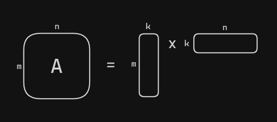

Matrix Decomposition vs Low Rank Approximation
For the sake of clarity, I shall diverge and dive a little deeper into the nuances. I believe it becomes important to give the terms the attention they deserve, wherein the lack of leads to a lot of confusion.
Matrix Decomposition
Factorization and(or) Decomposition
Decomposition is to break down into parts. It is the same as factorization. Just like integers that can be factorized and written as the product of two or more integers, the same is true for matrices.
“Any rectangular matrix can be written as the non-unique product of two or more matrices.”
While the above statement is true, not every possible decomposition is useful.
When is any factorization useful?
They are essentially used to solve systems of linear equations in an efficient manner. There’s a whole list at Matrix decomposition - Wikipedia.
Intuitively, a factorization would be useful when the component matrices hold some specific properties, or are smaller - making it easy to compute stuff.
Rank Factorization
- Rank Factorization is a type of matrix decomposition method.
Let $A$ be a matrix of dimension $m$ x $n$ with $rank(A) ≥ 1$, then $(P, Q)$ is said to be a rank-factorization of $A$ if:
- $P$ is of order $m \times k$
- $Q$ is of order $k \times n$ and $A = PQ$.
Rank factorization of $A_{m \times n} = P_{m \times k}Q_{k \times n}$ where $k = rank(A)$.
- Every finite-dimensional, non-null matrix has a rank decomposition.
- Rank decomposition is non-unique.
Proof: Rank factorization - Wikipedia or Rank-Factorization of a Matrix

Factorizing A as a thin matrix with m rows, fat matrix with n columns.
Assume that each element in the matrix takes up $b$-bits, then:
- Storing $A$ requires $(m \times n) \times b$ bits of storage. Storing $P$ and $Q$ requires $k\times(m+n)\times b$ bits of storage.
- Given a vector $x$, computing $Ax$ requires $m\times n$ flops. Given a vector $x$, computing the rank-decomposition of $A$ times $x$ i.e. $P(Qx)$ requires $k\times (m \times n)$ flops.
Example 1:
Consider the following matrices
$A = \begin{pmatrix}1 & 2 & 3 \\\ 4 & 5 & 6 \\\ 7 & 8 & 9 \\\ 10 & 11 & 12\end{pmatrix}$, $P = \begin{pmatrix}1 & 0 \\\ 0 & 1 \\\ 1 & 1 \\\ 1 & 1\end{pmatrix}$, $Q = \begin{pmatrix}1 & 2 & 3 \\\ 4 & 5 & 6\end{pmatrix}$
Reduced row echelon form of $A$ gives us: $\begin{pmatrix} 1 & 2 & 3 \\ 0 & -3 & -6 \\ 0 & 0 & 0 \\ 0 & 0 & 0\end{pmatrix}$ where there are only two non-zero rows. This tells us that $A$ has a rank of 2. Thus, a possible rank factorization of $A$ is $PQ$.
Here, if $A$ was stored as is, you would store 12 elements, whereas storing it’s components $P$ and $Q$ implies 14 elements. Thus factorization didn’t really help in this case.
Example 2:
Now, consider another set of matrices
$A = \begin{pmatrix}10 & 12 & 14 \\ 15 & 18 & 21 \\ 5 & 6 & 7 \\ 20 & 24 & 28\end{pmatrix}$, $P = \begin{pmatrix}2 \\ 3 \\ 1 \\ 4\end{pmatrix}$, $Q = \begin{pmatrix}5 & 6 & 7\end{pmatrix}$
Reduced row echelon form of A gives us: $$\begin{pmatrix} 10 & 12 & 14 \\ 0 & 0 & 0 \\ 0 & 0 & 0 \\ 0 & 0 & 0\end{pmatrix}$$where there is only one non-zero rows. This tells us that A has a rank of 1. Thus, a possible rank factorization of $A = PQ$.
Here, if $A$ was stored as is, you would store 12 elements, whereas storing it’s components $P$ and $Q$ implies just 7 elements. Thus factorization helps in this case.
When is rank factorization useful?
-
Rank factorization becomes quite useful when the rank-$k$ is relatively small compared to the matrix dimensions. However, note that a small rank is consequence of the method’s usefulness and not a constraint to begin with.
Thus, we want $A_{m \times n}$ to be a low rank matrix where $k \ll min(m, n)$.
-
The focus here is essentially on storage and compute. Instead of storing the entire matrix as it is, you store its components, making it memory efficient.
Low Rank Approximation
The primary goal is to identify the “best” way to approximate a given matrix A with a rank-k matrix, for a target rank k. Such a matrix is called a low-rank approximation.
Intuition
Here’s an intuitive example of what low rank approximation is and why it would be used: Big Ideas in Applied Math: Low-rank Matrices – Ethan N. Epperly (ethanepperly.com)
The example talks about weather data. Say you had 1000 stations recording stats on all 365 days. You could arrange it as a matrix like -
with each column represent a day’s data across all the 1000 stations. That would give us 365,000 elements.
“However, we have reasons to believe that significant compression is possible. Temperatures are correlated across space and time: If it’s hot in Arizona today, it’s likely it was warm in Utah yesterday. If we are particularly bold, we might conjecture that the weather approximately experiences a sinusoidal variation over the course of the year:
$$ \text{temperature at station i on day j} = a_i+ b_isin(2 \pi \times \frac{j}{365} + \phi) $$
For the sake of simplicity and representation, let me denote $sin(2 \pi \times \frac{j}{365} + \phi) = f(j, \phi)$. Hence, our new matrix where each element is approximated would be:
Notice that for each row you essentially need the coefficients $a_i, b_i$ while the value is then parametrically defined. Thus, in total we would now need 1000 a’s and 1000 b’s i.e. 2000 numbers instead of 365,000 to represent our information. Relate this to intrinsic dimensionality as being the minimum pieces of information required to represent your data.
The matrix $\hat{W}$ has a rank of 2 while $W$ has a maximal possible rank of 365 (since it is the minimum of two dimensional factors of the matrix).
“This example is suggestive that low-rank approximation, where we approximate a general matrix by one of much lower rank, could be a powerful tool.”
Applications
Examples from CSE 422 Lecture 9 at UW
- Image Compression: Let $A$ represent an image (with entries = pixel intensities). $m$ and $n$ are typically in the 100s. In With images, a modest value of $k$ (say 100 or 150) is usually enough to achieve approximations that look a lot like the original image.
- De-noising: If $A$ is a noisy version of some “ground truth” signal that is approximately low-rank, then passing to a low-rank approximation of the raw data $A$ might throw out lots of noise and little signal, resulting in a matrix that is actually more informative than the original.
Low rank approximation and Rank factorization
- Low rank approximation is essentially finding a matrix of lower rank that closely compares to the original matrix. Hence, there is always some loss of information.
- Not every matrix is well-approximated by one of small rank. A matrix may be excellently approximated by a rank-100 matrix and horribly approximated by a rank-90 matrix.
- Rank factorization on the other hand is simply representing a low rank matrix as a product of two matrices with maximal rank $k « min(m,n)$.
- For example, if we store a rank factorization of the low-rank approximation from our weather example, we need only store $2 \times(365 + 1000) = 2730$ numbers rather than $365,000$.
- Given a target rank-$k$, SVD is most often used to find the target low rank-$k$ matrix that best approximates our given matrix $A$.
Matrix ranks are approximated in practice
The condition that A has precisely rank k is of high theoretical interest but is not realistic in practical computations. Frequently, the numbers we use have been measured by some device with finite precision. Thus, it is useful to define the concept of approximate rank.
Rank decomposition is useful when a matrix has a low rank. Here’s a great explainer on why a lot of matrices in practice are low rank, if not can be approximated as low rank matrices which can then be decomposed - Why are so many matrices approximately low rank?